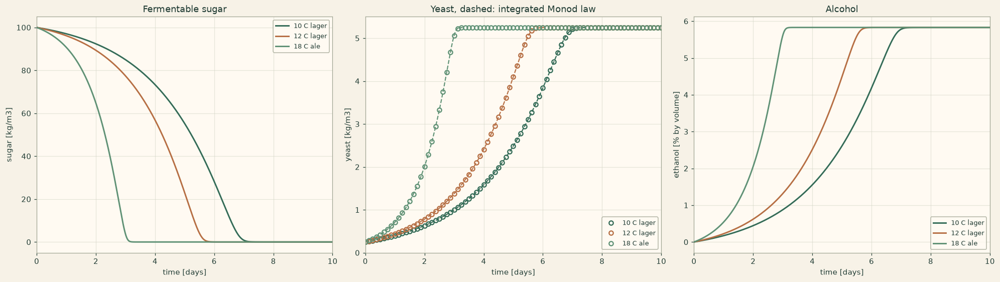

Docs › Examples › Fermentation in beer brewing
Bioprocess kinetics · 0D
Fermentation in beer brewing
Wort fermented by yeast at lager and ale temperatures: yeast growth, sugar consumption, alcohol and carbon dioxide.
Run locally with OneSimulation. The example downloads are free. Running them requires an activated runtime. Runtime Alpha 0.2.1a7 · CPython 3.13 on macOS (Apple Silicon), Ubuntu 22.04 (x86-64), and Windows x64. Installation and activation · View pilot plans. Scope of the reference checks.


What it computes
OneSimulation integrates the closed fermenter as a process unit whose reaction law returns Monod growth with growth-associated ethanol and CO2 formation; the maximum growth rate follows an Arrhenius law of the fermentation temperature. Three fermentations at 10, 12 and 18 C are followed for fourteen days with the classical Runge-Kutta method.
What it checks
Every stored state matches the exact integrated Monod equation to within 7e-5 s of time and the ethanol matches the stoichiometry to 3e-13 kg/m3; 95 % of the sugar is fermented after 6.7, 5.5 and 3.0 days, giving 46 kg/m3 ethanol (5.8 % by volume).
The notebook
The complete notebook, cell by cell. Run it to produce the figures and the comparison printout.
After the wort is cooled it is pitched with yeast. The yeast multiplies on the fermentable sugars (mostly maltose) and turns them into ethanol and carbon dioxide; the temperature decides how fast. Lager is fermented cold, near 10 °C, ale warmer. The fermenter is a closed, well-mixed vessel (0D) held at constant temperature.
The kinetics are those of Monod with growth-associated product formation:
with the maximum growth rate following an Arrhenius law, \(\mu_\mathrm{max}(T)=\mu_\mathrm{ref}\,e^{-\frac{E_a}{R}\left(\frac1T-\frac1{T_\mathrm{ref}}\right)}\).
| quantity | symbol | value |
|---|---|---|
| fermentable sugar in the wort (about 12 °Plato) | \(S_0\) | 100 kg/m³ |
| pitched yeast (dry mass) | \(X_0\) | 0.25 kg/m³ |
| yeast yield on sugar | \(Y_{X/S}\) | 0.05 |
| ethanol and CO₂ yield on sugar | \(Y_{E/S},\ Y_{C/S}\) | 0.46, 0.44 |
| maximum growth rate at 12 °C, activation energy | \(\mu_\mathrm{ref},\ E_a\) | 0.025 1/h, 70 kJ/mol |
| half-saturation constant | \(K_S\) | 5 kg/m³ |
The vessel is a process unit of OneSimulation whose reaction law returns the four production rates; the balances are integrated with the classical Runge-Kutta method.
Reference. J. Monod, Annu. Rev. Microbiol. 3 (1949) 371; for the yields see Bailey & Ollis, Biochemical Engineering Fundamentals, chapter 7, and for brewing practice Briggs et al., Brewing: Science and Practice. Because \(X+Y_{X/S}S=M\) is constant, the Monod equation integrates exactly:
and the products follow the sugar stoichiometrically, \(E=Y_{E/S}\,(S_0-S)\).
import numpy as np
from onesim.physics.systems import (
ProcessModelsConfiguration,
ProcessModelsPublicApi,
ProcessUnit,
)
from onesim.visualization import plots, theme
theme.set()Kinetics
The reaction law receives the concentrations (here in kg/m³), the temperature and the time, and returns the production rates and the heat release (zero: the fermenter is held at its temperature by its cooling jacket).
S0, X0, Y, Y_E, Y_C, Ks = 100.0, 0.25, 0.05, 0.46, 0.44, 5.0
mu_max = lambda T: 0.025 / 3600 * np.exp(-70e3 / 8.314 * (1 / T - 1 / 285.15))
def fermentation(c, T, t):
growth = mu_max(T) * c["S"] / (Ks + c["S"]) * c["X"]
return {
"X": growth,
"S": -growth / Y,
"E": Y_E * growth / Y,
"CO2": Y_C * growth / Y,
}, 0.0Fermentations at three temperatures
Lager at 10 and 12 °C and an ale at 18 °C, each followed for fourteen days in steps of two minutes.
temperatures = {"10 C lager": 283.15, "12 C lager": 285.15, "18 C ale": 291.15}
runs = {
label: ProcessModelsPublicApi().run(
ProcessModelsConfiguration(
parameters=dict(
component_ids=("X", "S", "E", "CO2"),
units=(
ProcessUnit(
"fermenter",
initial_concentrations={"X": X0, "S": S0, "E": 0.0, "CO2": 0.0},
initial_temperature=T,
reaction_law=fermentation,
),
),
final_time=14 * 86400.0,
time_step=120.0,
)
)
)
for label, T in temperatures.items()
}Comparison with the integrated Monod equation
For every stored state the exact time at which the yeast reaches its simulated amount is computed; the deviation from the simulated time measures the error. The ethanol is compared with the stoichiometry and the attenuation (share of sugar fermented) is reported.
M = X0 + Y * S0
for label, run in runs.items():
c, t = run.concentrations["fermenter"], run.times
exact_time = (
(1 + Ks * Y / M) * np.log(c["X"] / X0) - Ks * Y / M * np.log(c["S"] / S0)
) / mu_max(temperatures[label])
active = c["S"] > 1e-3 * S0
day_95 = t[np.argmax(c["S"] < 0.05 * S0)] / 86400
print(
f"{label}: largest time deviation from the integrated Monod law {np.max(np.abs(exact_time[active] - t[active])):.2e} s, "
f"ethanol deviation {np.max(np.abs(c['E'] - Y_E * (S0 - c['S']))):.1e} kg/m^3, "
f"95 % of the sugar fermented after {day_95:.2f} days, final ethanol {c['E'][-1]:.1f} kg/m^3 ({c['E'][-1] / 789 * 100:.1f} % by volume), CO2 released {c['CO2'][-1] / 1.83:.1f} m^3 per m^3 of wort"
)Figure
Sugar, yeast against the integrated Monod law, and alcohol content for the three temperatures.
days = {label: run.times / 86400 for label, run in runs.items()}
X_line = np.linspace(X0, M * 0.9999, 400)
fig = plots.figure(1, 3, size=(18, 5))
plots.line(
y={
label: (days[label], run.concentrations["fermenter"]["S"])
for label, run in runs.items()
},
xlimits=(0, 10),
xlabel="time [days]",
ylabel="sugar [kg/m3]",
title="Fermentable sugar",
legend="upper right",
ax=fig[0],
)
plots.line(
points={
label: (days[label][::90], run.concentrations["fermenter"]["X"][::90])
for label, run in runs.items()
},
reference={
label: (
(
(1 + Ks * Y / M) * np.log(X_line / X0)
- Ks * Y / M * np.log((M - X_line) / Y / S0)
)
/ mu_max(T)
/ 86400,
X_line,
)
for label, T in temperatures.items()
},
xlimits=(0, 10),
xlabel="time [days]",
ylabel="yeast [kg/m3]",
title="Yeast, dashed: integrated Monod law",
legend="lower right",
ax=fig[1],
)
plots.line(
y={
label: (days[label], run.concentrations["fermenter"]["E"] / 789 * 100)
for label, run in runs.items()
},
xlimits=(0, 10),
xlabel="time [days]",
ylabel="ethanol [% by volume]",
title="Alcohol",
legend="lower right",
ax=fig[2],
)
plots.show()Going further
Give the vessel a heat release of about 0.6 MJ per kg of sugar and a jacket with finite cooling power to see how warm a fermenter runs. Add ethanol inhibition to the growth rate, or schedule the temperature in time (a warm diacetyl rest at the end of a lager fermentation).